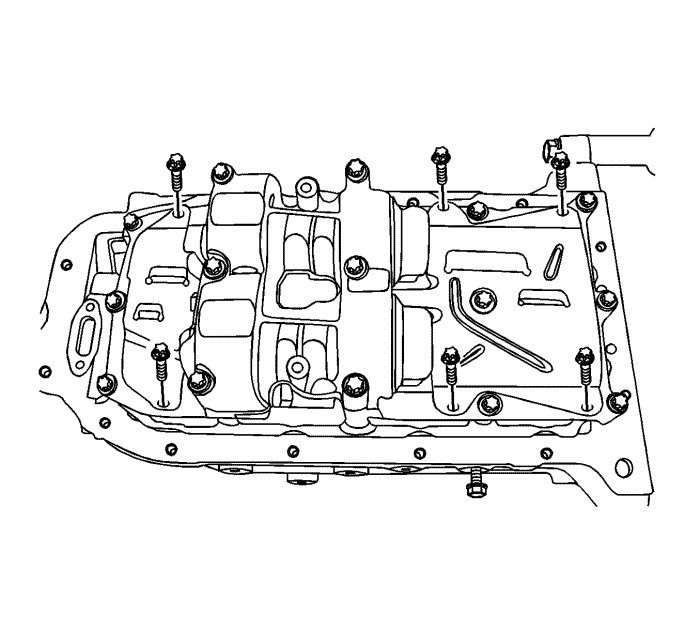
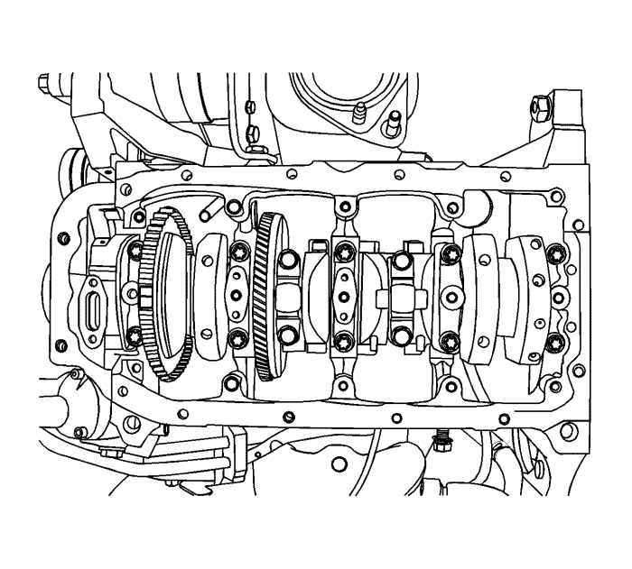
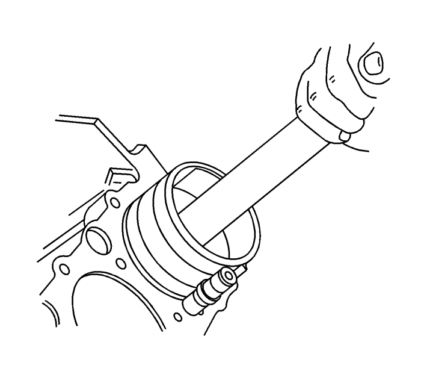

Sustitución de pistón, biela y cojinete — LD9
Herramientas especiales
| • | EN-8037 Compresor universal de segmentos |
| • | EN-8087 Micrómetro de comprobación de diámetros de cilindro |
| • | EN-45059 Medidor de ángulos |
| • | J -24086-B Juego para la reparación de bulones |
Si desea informarse sobre herramientas regionales equivalentes, consultar Herramientas especiales .
Procedimiento de desmontaje

- Desmonte la culata con el colector de admisión y el colector de escape unidos a ella. Consultar Sustitución de la culata .
- Desmonte el cárter de aceite. Consultar Sustitución del cárter de aceite : LE5 .
- Desmonte la tubería de aspiración de aceite y la junta tórica.

- Retire el rascador del cárter de aceite.

- Desmonte la unidad de equilibrado del cigüeñal. Consultar Sustitución del dámper del cigüeñal .

- Coloque el pistón en la parte inferior de su carrera.
- Marque la posición en la tapa de la biela.
- Extraiga los tornillos de la caperuza de la biela.
- Desmonte la tapa y el semicojinete inferior de la biela.
- Desmonte el semicojinete superior de la biela.
Nota: Tenga cuidado al manipular el pistón. Los segmentos del pistón desgastado están afilados.
- Desmonte el pistón.
- Expanda los segmentos del pistón usando el expandor universal de segmentos.
- Desmonte los segmentos de pistón.
- Desmonte el bulón del conjunto de pistón y biela usando el juego para la reparación de bulones J-24086 (1).
- Separe el pistón de la biela.
Procedimiento de inspección
- Examinar los pistones por si se observan las siguientes condiciones:
| • | Zonas erosionadas en la cabeza del pistón |
| • | Desgaste de orificios de bulones o de los bulones de pistón |
| • | Arañazos o daños en el revestimiento de las faldas de los pistones |
| • | Grietas, arañazos o rebabas en las ranuras de los segmentos pueden causar agarrotamiento |
| • | Pistas de segmentos desgastadas o deformadas |
- Sustituir aquellos pistones donde se observen indicios de desgaste excesivo o de daños.
- Mida la anchura de los pistones usando el siguiente procedimiento:
| • | Utilizando un micrómetro de exteriores, mida la anchura del pistón en las superficies de empuje del pistón, en perpendicular a la línea central del bulón. |
| • | Comparar el valor medido del pistón al del diámetro de su cilindro restando el valor de la anchura del pistón al del diámetro del cilindro. |
| • | Si el valor obtenido tras la medición es superior al especificado y los valores de los cilindros están dentro de las tolerancias especificadas, sustituir el pistón. |
- Mida la holgura entre el orificio del bulón del pistón y el bulón del pistón (2) usando el siguiente procedimiento:
| • | Tanto los bulones como sus alojamientos deberán estar libres de marcas de fricción. |
| • | Utilice un micrómetro de exteriores (1) para medir el bulón en las áreas de contacto del pistón. |
- Utilizando un micrómetro de interiores, medir el diámetro interior del alojamiento del bulón. Compare el resultado del diámetro del bulón y la holgura entre bulón y su orificio. Consultar Especificaciones mecánicas del motor : LE5, LE9 .
| • | Si la holgura es excesiva, determine qué pieza se encuentra fuera de las especificaciones y sustitúyala según sea necesario. |
| • | Sustituya el pistón si alguna de sus dimensiones está fuera de las especificaciones. |
| • | Si el nuevo pistón no cumple con las especificaciones de holgura, es posible que el bloque de cilindros deba sobredimensionarse hasta 0,25. Sólo hay un tamaño de pistones y segmentos sobredimensionados disponible para su servicio. |
- Mida el corte del segmento del pistón usando el siguiente procedimiento.
| • | Tanto los bulones como sus alojamientos deberán estar libres de marcas de fricción. |
| • | Coloque el segmento (1) en la zona del cilindro que recorre dicho segmento, aproximadamente a 25 mm por debajo de la superficie. Asegurarse de que el segmento está perpendicular con respecto al cilindro, empujándolo en posición sirviéndose de la cabeza del pistón. |
| • | Mida el corte del segmento del pistón con una galga de espesores (2). |
| • | Si las separaciones exceden los valores especificados, deberán sustituirse los segmentos. |
| • | Repita el procedimiento para todos los segmentos. |
- Mida la holgura lateral del segmento del pistón usando el siguiente procedimiento.
| • | Pase el segmento de pistón (1) en su totalidad alrededor de la ranura del segmento del pistón. Si la ranura del segmento causa cualquier agarrotamiento, desbarbe la ranura con una lima fina. Si se observa agarrotamiento debido a que el segmento está deformado, sustituir el segmento. |
| • | Con el anillo de pistón sobre el pistón, utilice galgas de espesores (2) para comprobar la holgura en distintos puntos. |
| • | Compare las medidas con la holgura lateral del segmento. Consultar Especificaciones mecánicas del motor : LE5, LE9 . |
| • | Si la holgura es superior a los valores especificados, sustituir los segmentos. |
| • | Si el nuevo segmento no reduce la holgura a las especificaciones correctas, instale un nuevo pistón. |
| • | Si el nuevo pistón no cumple las especificaciones de holgura, el bloque motor puede necesitar una sobremedida de 0,25 mm. Sólo hay un tamaño de pistones sobredimensionados y de anillos disponibles para el servicio. |
- Compruebe si las bielas presentan alguna de las siguientes condiciones:
| • | Compruebe si el cuerpo de la biela está retorcido o curvado. |
| • | Revise si la tapa de la biela presenta muescas o daños provocados por posibles interferencias. |
| • | Examinar la posible existencia de arañazos o abrasión en la superficie del asiento del cojinete de biela |
| • | Si se observan pequeños arañazos en los orificios de los muñones de las bielas, limpiar los orificios utilizando papel de lija y siguiendo un movimiento circular. |
| • | Conserve los tornillos originales para el montaje inicial. Deberán sustituirse en el montaje final. |
- Mida la holgura entre el orificio del bulón de la biela y el bulón usando los siguientes procedimientos.
Utilizando un micrómetro de exteriores (1), tome dos medidas del bulón (2) en la zona de contacto de la biela.
- Utilizando un micrómetro de interiores, mida el orificio del bulón de pistón de la biela (1).
| • | Restar el valor del diámetro del bulón al del alojamiento en la biela. |
| • | Compare las holguras. Consultar Especificaciones mecánicas del motor : LE5, LE9 . |
| • | Si la holgura es excesiva, sustituya el bulón del pistón. Si el nuevo bulón no resuelve el problema de holgura, sustituya la biela. |
- Mida el diámetro interior del cojinete del cigüeñal de la biela (1) usando los siguientes procedimientos.
| • | Utilizar un micrómetro de interiores y medir el diámetro del alojamiento del cojinete del cigüeñal en la biela. |
| • | Compare las mediciones de los diámetros interiores. Consultar Especificaciones mecánicas del motor : LE5, LE9 . |
| • | Sustituya la biela si el diámetro interior está fuera de las especificaciones. No reacondicione la biela. |
- Compruebe la planitud de la superficie de junta del bloque motor con una regla y una galga de espesores. Consultar Especificaciones mecánicas del motor : LE5, LE9 .
- Compruebe la concentricidad y alineación del cilindro usando un micrómetro de comprobación del diámetro interior de cilindros EN-8087. Consultar Especificaciones mecánicas del motor : LE5, LE9 . Si el diámetro interior no cumple las especificaciones, sustituya el bloque motor.
- Compruebe si las paredes interiores del cilindro presentan desgaste, excentricidad, formación de rebabas y conicidad usando un micrómetro de interiores. Consultar Especificaciones mecánicas del motor : LE5, LE9 .
- Compruebe si el interior del cilindro presenta vitrificación. Rectifique ligeramente el interior del cilindro según sea necesario.
Procedimiento de montaje
Nota: Para facilitar el montaje del bulón del pistón, la varilla de unión debe calentarse hasta los 280°C (536°F). Caliente únicamente la varilla de unión superior. Utilice polvos termocolor comerciales para determinar la temperatura correcta. Cuando el color de los polvos cambie de negro a verde, será indicativo de que se ha alcanzado la temperatura de montaje correcta.
- Alinee la muesca del pistón y de la biela para que las caras adecuadas queden orientadas hacia la parte delantera del motor.
- Monte la guía del bulón a través del pistón y de la biela.
- Recubra el bulón del pistón con aceite limpio.
- Monte el bulón por la parte opuesta del pistón.
- Monte el bulón en el conjunto de biela y pistón utilizando el juego J-24086-B.
- Seleccione un juego de segmentos nuevos.
- Monte uno de los segmentos de engrase, el expansor y, a continuación, el segundo segmento de engrase en la ranura inferior del pistón.
- Monte el segundo segmento de compresión en la ranura intermedia del pistón.
- Monte el segmento de compresión superior en la ranura superior del pistón.
- Utilice el expansor de segmentos para montar los segmentos en el pistón. No expanda los segmentos del pistón más allá del límite necesario para su montaje.
- Coloque de forma alterna los segmentos rascadores de aceite, los cortes del segmento de engrase, el segundo segmento de compresión y el segmento superior de compresión con respecto a la muesca de la cabeza del pistón.

- Lubrique las paredes del cilindro y los segmentos del pistón con aceite de motor limpio.
- Monte el pistón utilizando el compresor EN-8037 y una manilla de madera. Guíe el extremo inferior de la biela para evitar daños en el apoyo del cigüeñal.
- Monte los cojinetes de biela y la tapa. Consultar Limpieza y comprobación de cojinetes y cigüeñal .
Precaución:Consulte Precaución con las fijaciones en la sección Prólogo.
- Monte los tornillos de la caperuza de la varilla de unión y apriételos hasta 35 N·m (26 lib. pie).
Utilizando el medidor EN-45059, apriete los pernoscon un giro de 45 grados más una vuelta de 15 grados.
- Monte el medidor EN-45059 y apriete los pernos del conjunto de la unidad del compensador del cigüeñal a 20 N·m (15 lib. pie)y gire los pernos otros 45 grados utilizando un medidor EN-45059.
- Monte los tornillos del raspador del cárter del aceite y apriételos hasta 8 N·m (7 lib. pulg.).
- Monte el tubo de aspiración de aceite con la nueva junta tórica y apriete los pernos a 8 N·m (7 lib. pulg.).

- Montar el cárter de aceite. Consultar Sustitución del cárter de aceite : LE5 .
- Monte la culata con el colector de admisión y el colector de escape unidos a ella. Consultar Sustitución de la culata .
| © Copyright Chevrolet Europe. All rights reserved |